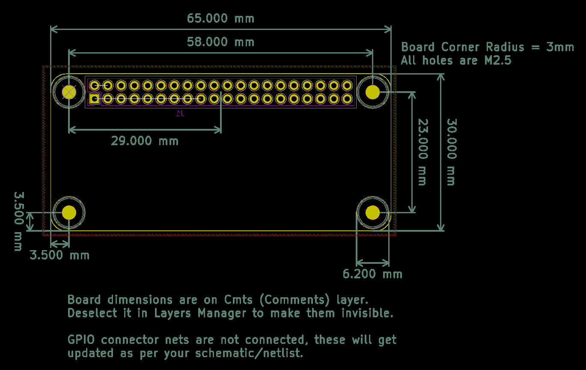
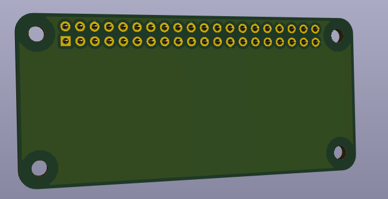
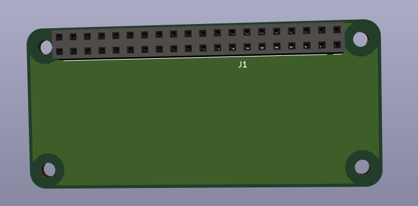

Easy starting point for Raspberry Pi Zero (W) uHAT extension board.
GPIO 40 Pin connector is of through hole type, board size is 65x30mm. Pi Zero or Zero W
boards do not have PoE header, other components can be placed in that region.
ID EEPROM is not added as its footprint package and pull-up resistor size could be
different based on your project.
Please refer to
HAT Design Guidelines for more details.
  
(c) 2019 Ravikiran Bukkasagara, contact@ravikiranb.com
This project's Schematics, PCB design files, Footprint libraries
and Documentation files are released under MIT Open Source License.
Please refer to the file named LICENSE in the project repository
for complete license text.